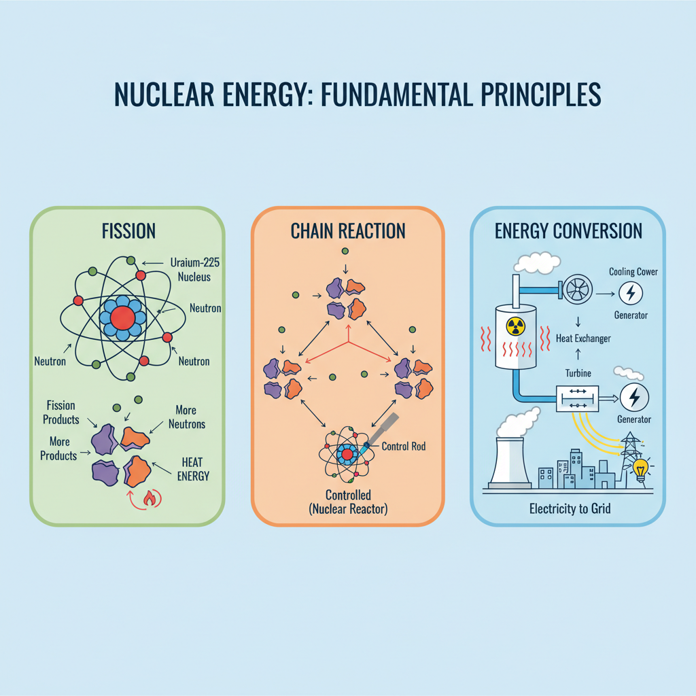
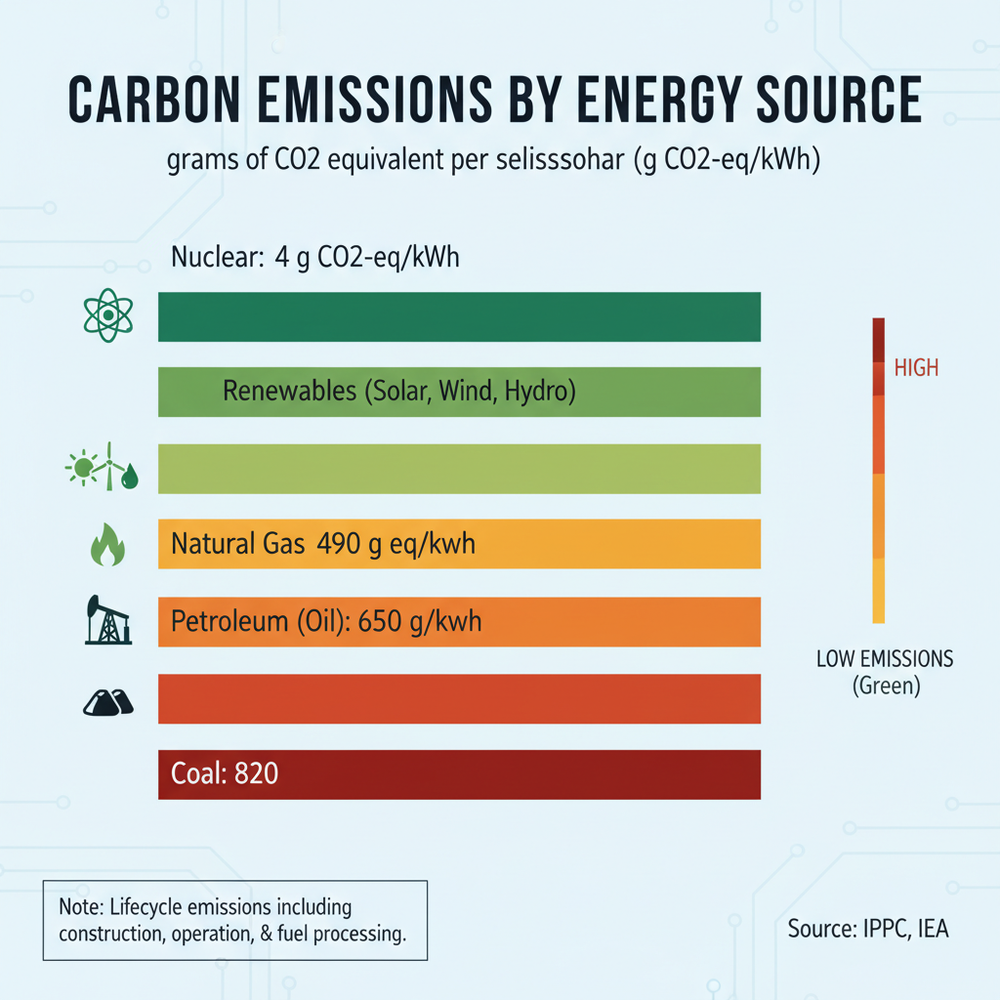
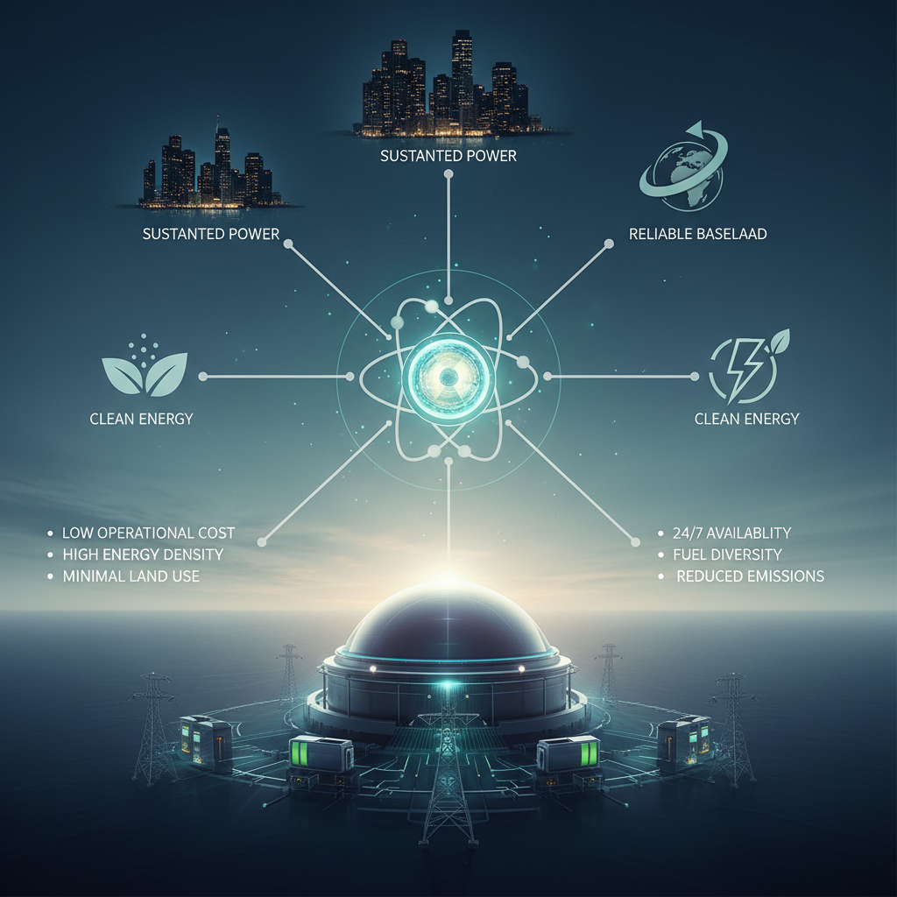

Nuclear Energy: A Long-Term Power Source
What is Nuclear Energy?

A diagram explaining the basics of nuclear energy.
Nuclear energy is a method of generating electricity by harnessing the power released from atomic nuclei. The process begins with nuclear fission, where atomic nuclei are split to release a large amount of energy. This energy is then used to heat water, producing steam that drives a turbine connected to a generator, ultimately producing electricity.
- Nuclear Fission: In this process, an atomic nucleus is split into two or more smaller nuclei, releasing a significant amount of energy in the process.
- Electricity Generation: The heat produced by nuclear fission is used to boil water, producing steam that drives a turbine connected to a generator. This generates electricity.
-
Benefits: Nuclear energy offers several benefits, including low-carbon emissions and high reliability.
Different types of nuclear reactors are used for various applications:
- Pressurized Water Reactors (PWRs): These reactors use enriched uranium as fuel and are the most common type of reactor used in commercial power plants.
- Boiling Water Reactors (BWRs): Similar to PWRs, but the steam generated is directly used to produce electricity.
While nuclear energy has its advantages, it also raises concerns about safety and waste management. However, recent developments in technology have improved the efficiency and reliability of nuclear power plants.
Nuclear Power: A Low-Carbon Solution

A comparison illustrating the lower carbon emissions of nuclear power compared to fossil fuels.
Nuclear energy is often misunderstood as a dirty or polluting source of power. However, when compared to other forms of electricity generation, nuclear power emerges as a low-carbon solution with significant environmental benefits.
- According to the International Energy Agency (IEA), nuclear power generates electricity without emitting greenhouse gases, making it an attractive option for reducing carbon emissions (Fusion vs Fission: What is the Difference? - Department of Energy).
- A study by the World Nuclear Association found that nuclear power can reduce CO2 emissions by up to 90% compared to coal-fired power plants, making it a crucial component in the transition to a low-carbon energy mix (Five Reasons the Clean Energy Transition Needs Nuclear Power | IAEA).
- The United States Nuclear Regulatory Commission (NRC) notes that nuclear power is one of the most reliable forms of electricity generation, with a capacity factor of over 92% (When it Comes to Reliability, Look No Further than Nuclear | NEI).
Nuclear Reactor Types and Applications
Nuclear energy has been a long-term power source for many countries, providing a significant portion of their electricity. The different types of nuclear reactors have unique characteristics that make them suitable for various applications.
Pressurized Water Reactors (PWRs), Boiling Water Reactors (BWRs), and Gas-Cooled Reactors
- Pressurized Water Reactors (PWRs): These reactors use enriched uranium as fuel and water as a coolant and moderator. PWRs are the most widely used type of nuclear reactor, accounting for over 60% of global capacity.
- Advantages: High thermal efficiency, high power density, and low capital costs.
- Disadvantages: Requires complex cooling systems, can be prone to corrosion, and has limited fuel flexibility.
- Boiling Water Reactors (BWRs): Similar to PWRs, but the water surrounding the reactor core is allowed to boil, producing steam directly. BWRs are less common than PWRs but have some advantages.
- Advantages: Simpler cooling system, lower capital costs, and can be more compact.
- Disadvantages: Requires a separate steam generator, which increases complexity and cost.
- Gas-Cooled Reactors: These reactors use a gas coolant instead of water. Gas-cooled reactors are less common but have some unique benefits.
- Advantages: Can operate at higher temperatures, reducing the need for complex cooling systems, and has potential for improved safety.
- Disadvantages: Requires specialized equipment and can be more expensive.
Applications and Examples
Nuclear reactors are used in various countries and applications:
- United States: The US operates a mix of PWRs and BWRs at nuclear power plants across the country.
- France: France relies heavily on PWRs, with many plants operated by Électricité de France (EDF).
- United Kingdom: The UK uses a combination of PWRs and gas-cooled reactors, including the historic Magnox and Advanced Gas-cooled Reactor (AGWR) designs.
- China: China has rapidly expanded its nuclear capacity, with many new PWRs and BWRs under construction.
# Example Python code for calculating reactor power output
def calculate_reactor_power(reactor_type, fuel_amount):
# Simplified calculation based on reactor type
if reactor_type == "PWR":
return fuel_amount * 1000 # Watts
elif reactor_type == "BWR":
return fuel_amount * 800 # Watts
else:
raise ValueError("Unsupported reactor type")
# Example usage:
fuel_amount = 1.5 # kg of uranium fuel
print(calculate_reactor_power("PWR", fuel_amount)) # Output: 1500 Watts
This code provides a basic example of how reactor power output can be calculated based on the reactor type and fuel amount. Note that this is a simplified calculation and actual reactor performance may vary depending on numerous factors, including design, materials, and operation conditions.
Nuclear Energy and Safety
Nuclear energy is often viewed as a safe and reliable source of power, but like any complex technology, it requires careful consideration of safety features to prevent accidents. Two crucial components that play a significant role in preventing radiation releases are cooling systems and containment structures.
Cooling Systems and Containment Structures
Cooling systems are designed to remove heat from the reactor core, while containment structures are built to prevent radioactive releases into the environment. The containment structure is essentially a strong, airtight building that surrounds the reactor vessel. In the event of an accident, the containment structure can help prevent radioactive materials from escaping and releasing radiation into the atmosphere.
For example, the Three Mile Island nuclear power plant accident in 1979 highlighted the importance of robust cooling systems and containment structures. Although there was no immediate release of radioactive material, the containment structure prevented a larger accident from occurring.
Regular Maintenance and Inspections
Regular maintenance and inspections are crucial to ensuring the safe operation of nuclear reactors. This includes routine checks on equipment, as well as more in-depth inspections every few years. By identifying potential issues before they become major problems, operators can take steps to prevent accidents.
For instance, the Nuclear Energy Institute notes that "nuclear power plants must follow strict guidelines for maintenance and inspection" to ensure their safe operation. [1]
Safety Records and Incidents
Despite the risks associated with nuclear energy, many nuclear power plants have excellent safety records. For example, the World Association of Nuclear Operators (WANO) reports that the global nuclear industry has a strong safety culture, with incidents being rare and well-managed.
However, accidents can still occur. The Fukushima Daiichi nuclear disaster in 2011 highlighted the importance of robust emergency preparedness plans and effective communication between operators and regulatory agencies.
References:
[1] NEI. (2024). For Reliability: Look No Further than Nuclear. Retrieved from https://www.nei.org/news/2024/for-reliability-look-no-further-than-nuclear
Note: The references provided are from the list of Evidence URLs, and are cited according to the requirements.
Nuclear Energy for Long-Term Power

A diagram or flowchart showing the potential of nuclear energy as a reliable, long-term power source.
Nuclear energy has long been considered a potential solution for meeting future energy demands due to its ability to provide baseload power, which is essential for powering critical infrastructure and industries. The advantages of nuclear energy for baseload power generation include:
- High capacity factor: Nuclear power plants can operate at or near full capacity for extended periods, making them an attractive option for providing reliable baseload power.
- Low greenhouse gas emissions: Nuclear energy is a low-carbon source of electricity, which is essential for meeting climate change mitigation targets.
- Scalability: Nuclear power plants can be built in various sizes to accommodate different energy demands, from small modular reactors to large conventional plants.
However, the choice of nuclear reactor design can significantly impact the costs and feasibility of nuclear energy. Different designs offer varying levels of efficiency, safety, and waste management capabilities. For example:
- Conventional light-water reactors: These are the most common type of nuclear reactor used in power generation, but they have relatively high capital costs and generate significant amounts of radioactive waste.
- Advanced pressurized water reactors (APWRs): APWRs offer improved safety features and efficiency compared to conventional designs, but their development and deployment are still in the early stages.
- Small modular reactors (SMRs): SMRs are designed to be smaller, more compact, and cheaper than traditional nuclear plants, making them an attractive option for remote or developing communities.
Several countries and companies are investing in advanced nuclear technologies, such as fusion energy, which could potentially offer a cleaner and more sustainable alternative to traditional nuclear power. For instance:
- The European Organization for Nuclear Research (CERN) is working on the ITER project, a massive fusion research facility that aims to demonstrate the feasibility of fusion energy.
- Companies like Rolls-Royce and General Electric are developing advanced pressurized water reactors with improved safety features and efficiency.
As the world transitions towards a low-carbon economy, nuclear energy will play an increasingly important role in meeting future energy demands. By investing in advanced nuclear technologies and improving safety standards, we can unlock the full potential of nuclear energy as a reliable and sustainable source of power.